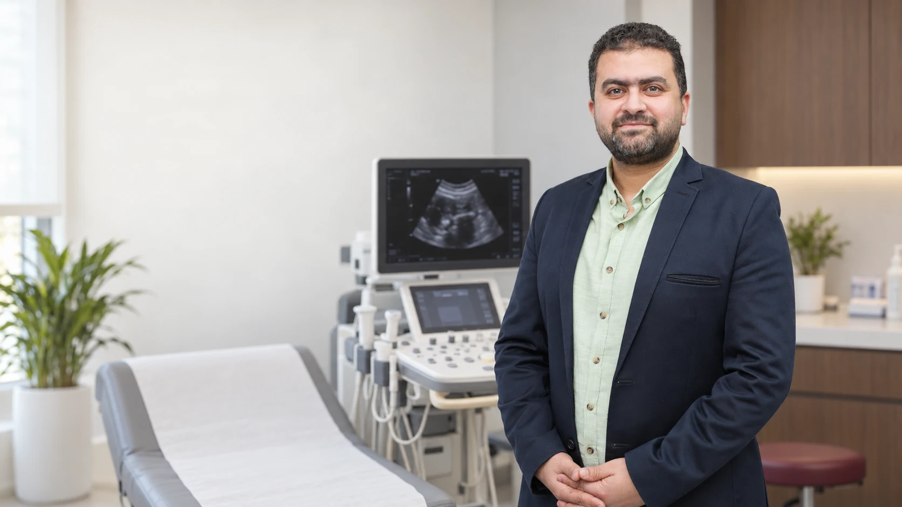

Practical answers
The information a patient needs before an examination, without unnecessary complexity.

Guidance for patients and families
Practical answers about preparation, paediatric ultrasound and 4D imaging, written in straightforward language with trusted medical references.
The information a patient needs before an examination, without unnecessary complexity.
Links to reliable medical references at the end of every article for further reading.
Educational guidance that does not replace a clinician’s assessment or examination-center instructions.
A concise guide
Three short reads to help you understand and prepare for an examination. Your clinician’s or center’s instructions remain the reference for your individual case.

Fasting or drinking water? What should you bring, and why do instructions vary?
Read article →
Simple steps that help a child and parent approach the examination more calmly.
Read article →
A straightforward explanation of 2D, 3D and 4D imaging and when each may contribute to medical assessment.
Read article →Also watch
The video library includes the profile film and published RadioMind activities, including Round 3 MSK US 2026.
Go to videos →Looking for something else?